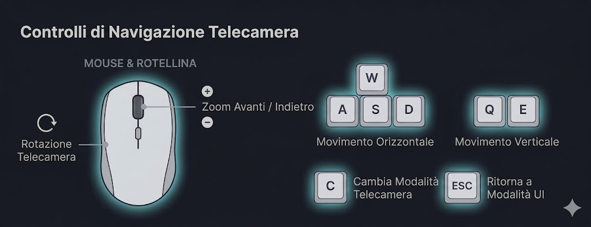

Manuale utente
Questa sezione descrive in modo dettagliato come usare l’applet.
L’obiettivo è permettere anche a un utente che la apre per la prima volta
di capire chiaramente cosa vede a schermo, quali controlli può usare e
quali operazioni deve eseguire per generare e analizzare l’approssimazione
della superficie mediante patch di Coons.
Schermata iniziale dell’applicazione
L’immagine seguente mostra esattamente ciò che l’utente vede quando
l’applicazione viene avviata.

Appena l’applet si apre, la finestra è già composta da più aree ben distinte,
tutte visibili contemporaneamente. L’utente non deve cercare menu nascosti
o aprire pannelli aggiuntivi per iniziare.
Sul lato sinistro è sempre presente il pannello principale
dell’interfaccia. Questo pannello contiene tutti i controlli necessari per
usare l’applicazione: la scelta del tipo di superficie di riferimento, i
parametri della superficie, i parametri della griglia di Coons, il pulsante
per generare l’approssimazione, le opzioni di visualizzazione e i valori
numerici relativi all’errore.
In alto a destra è sempre presente il riquadro
Controls. Questo riquadro è un promemoria costante dei comandi di
movimento della telecamera e dei tasti più importanti. Serve a ricordare
all’utente come muoversi nella scena e come passare dal controllo della
camera all’interazione con l’interfaccia.
In basso a destra è sempre presente il riquadro
Heatmap Legend. Questo riquadro mostra il significato dei colori
usati nella heatmap dell’errore. Anche se la heatmap non è ancora attiva,
la legenda rimane visibile come riferimento costante.
Al centro dello schermo si trova la vista 3D della scena.
In quest’area l’utente osserva la superficie di riferimento, l’eventuale
approssimazione generata, la griglia di Coons e la colorazione della
heatmap, se attivata. Tutti i risultati delle modifiche effettuate nel
pannello di sinistra vengono osservati qui.
È importante notare che durante il normale funzionamento dell’applet questi
elementi restano sempre visibili sullo schermo: il pannello di sinistra,
il riquadro dei comandi e la legenda della heatmap non vengono nascosti
durante l’uso.
Comandi di movimento e interazione
Prima di modificare i parametri della superficie, è importante capire come
muoversi all’interno della scena 3D e come passare correttamente dal
controllo della telecamera all’interazione con l’interfaccia.
- W A S D: spostano la telecamera nel piano orizzontale
- Q / E: spostano la telecamera verso l’alto o verso il basso
- Mouse: ruota la visuale quando il controllo della camera è attivo
- Scroll del mouse: esegue lo zoom avanti o indietro
- C: passa dal controllo della camera all’interazione con la UI, e viceversa

All’avvio dell’applet, il mouse viene usato per controllare la telecamera.
Questo significa che muovendo il mouse si modifica la visuale della scena.
In questa modalità, il puntatore non è libero di cliccare normalmente sugli
elementi dell’interfaccia.
Quando l’utente vuole modificare un parametro nel pannello di sinistra,
deve premere C. Premendo questo tasto, il mouse viene
sganciato dal controllo della telecamera e torna
disponibile per interagire con la UI. In questo modo l’utente può cliccare
sui menu, spostare gli slider, attivare le caselle e premere i pulsanti.
Dopo aver terminato l’interazione con l’interfaccia, l’utente può premere
di nuovo C per riassociare il mouse al controllo
della telecamera. Da quel momento il mouse torna a ruotare la
visuale della scena.
È molto importante capire che il tasto C non nasconde
alcun menu e non modifica la visibilità dell’interfaccia. Il suo unico
scopo è cambiare il comportamento del mouse:
- prima pressione di C: il mouse viene liberato dalla camera e può usare la UI;
- seconda pressione di C: il mouse torna a controllare la camera.
Per un primo utilizzo si consiglia di provare subito questo passaggio:
muovere prima la camera, poi premere C per cliccare nell’interfaccia, e
infine premere di nuovo C per tornare alla navigazione della scena.
Indicatore di stato
Il campo Status nel pannello di sinistra indica lo stato
corrente dell’applicazione e aiuta a capire quando è necessario ricalcolare
l’approssimazione.
-
Editing reference surface
Stato iniziale all’avvio dell’applicazione. Indica che l’utente sta
modificando la superficie di riferimento e che l’approssimazione non è
ancora stata generata.
-
Approximation Ready
Indica che l’approssimazione è stata generata ed è aggiornata rispetto
ai parametri correnti.
-
Surface changed, recomputation required
Compare quando la superficie di riferimento viene modificata dopo aver
generato l’approssimazione. È necessario premere
Recompute Approximation per aggiornare la superficie
approssimata.

Superficie di riferimento
La superficie di riferimento è la superficie iniziale che l’applicazione
usa come modello da approssimare. Tutta l’analisi successiva parte da qui.
Prima si definisce questa superficie, poi si genera la sua approssimazione
mediante patch di Coons.
All’avvio dell’applicazione, la superficie è impostata con i seguenti valori
di default:
- Surface Mode: Analytic Waves
- Height Scale: 0 (superficie inizialmente piatta)
- Noise Scale: non utilizzato in modalità Analytic Waves
Con questi parametri iniziali la superficie di riferimento risulta completamente
piatta. L’utente può quindi modificare i parametri per introdurre variazioni
e osservare come cambia l’approssimazione.
Parametri disponibili
-
Surface Mode:
Seleziona il tipo di superficie di riferimento da generare. Le modalità
disponibili sono:
- Analytic Waves (default)
- Perlin Noise
- Layered Perlin Noise
A seconda della modalità selezionata, la forma della superficie cambia in
modo evidente.
-
Height Scale:
Controlla quanto la superficie si sviluppa in altezza. Valori piccoli
producono una superficie più piatta, mentre valori più alti producono
rilievi e avvallamenti più marcati. Con valore pari a zero, la superficie
risulta completamente piana.
-
Noise Scale:
Questo parametro è attivo solo quando la modalità selezionata è
Perlin Noise oppure Layered Perlin Noise.
In queste modalità controlla la distribuzione del rumore sulla superficie.
Nella modalità Analytic Waves questo parametro non ha
effetto.
-
Randomize Noise:
Questo pulsante è utilizzato esclusivamente nelle modalità
Perlin Noise e Layered Perlin Noise.
Premendolo viene generata una nuova configurazione casuale del rumore.
Nella modalità Analytic Waves il pulsante non modifica
la superficie.
In generale, superfici con dettagli più irregolari, con variazioni più rapide
o con rilievi più forti sono più difficili da approssimare con una griglia
poco fitta.

Impostazioni della griglia di Coons
Dopo aver scelto la superficie di riferimento, l’utente deve impostare la
griglia utilizzata per costruire l’approssimazione. Il dominio viene
suddiviso in una griglia rettangolare e ogni cella della griglia
corrisponde a una patch di Coons.
Parametri disponibili
-
Grid Vertical Offset:
Definisce la distanza verticale tra la superficie di riferimento e la
superficie approssimata. Questo parametro non modifica la qualità
matematica dell’approssimazione, ma serve esclusivamente a separare
visivamente le due superfici, evitando sovrapposizioni che renderebbero
difficile il confronto.
-
Grid Resolution X: e Grid Resolution Z
Definiscono il numero di suddivisioni del dominio rispettivamente lungo
l’asse X e l’asse Z. Aumentando questi valori:
- le patch diventano più piccole;
- la griglia diventa più fitta;
- l’approssimazione tende a migliorare;
- aumenta il costo computazionale.
-
Patch Resolution:
Controlla la densità della mesh utilizzata per visualizzare ogni patch.
Questo parametro influisce principalmente sull’aspetto visivo della
superficie renderizzata, rendendola più liscia o più dettagliata, ma non
modifica la definizione matematica della patch.

Generazione dell’approssimazione
Dopo aver definito la superficie di riferimento e i parametri della griglia,
l’utente deve premere il pulsante Generate Approximation.
Questo passaggio è fondamentale.
Premendo questo pulsante, l’applicazione:
- legge i parametri attualmente impostati;
- costruisce la griglia di Coons;
- genera la superficie approssimata;
- aggiorna i valori numerici dell’errore.
Dopo la prima generazione, il pulsante cambia stato e viene mostrato come
Recompute Approximation. Questo indica che è possibile
ricalcolare l’approssimazione dopo aver modificato i parametri.
Una volta generata l’approssimazione, alcuni parametri della griglia, come
la risoluzione e l’offset verticale, possono essere modificati e il risultato
viene aggiornato in tempo reale sulla superficie approssimata.
Questo permette all’utente di osservare immediatamente l’effetto delle modifiche.
Se invece vengono modificati i parametri della superficie di riferimento,
l’approssimazione non viene aggiornata automaticamente. In questo caso, il campo
Status mostrerà il messaggio:
Surface changed, Recomputation Required
Questo indica che la superficie di riferimento è cambiata e che è necessario
premere nuovamente il pulsante Recompute Approximation per
aggiornare la superficie approssimata in base ai nuovi parametri.
Dopo la generazione, il risultato può essere osservato direttamente nella
scena 3D e analizzato tramite le opzioni di visualizzazione e i valori
numerici dell’errore presenti nel pannello.

Opzioni di visualizzazione
La sezione Display Options permette di controllare quali
elementi devono essere visibili nella scena. Queste opzioni sono utili per
confrontare la superficie di riferimento con l’approssimazione e per
analizzare l’errore.
Parametri disponibili
-
Show Reference Surface
Mostra o nasconde la superficie di riferimento. Disattivando questa
opzione è possibile osservare più chiaramente la superficie approssimata.
-
Show Coons Grid
Mostra o nasconde la griglia di Coons. Quando attiva, rende visibile la
suddivisione del dominio nelle singole patch.
-
Enable Heatmap
Attiva la colorazione della superficie approssimata in base all’errore
locale. In questo modo diventa immediatamente visibile in quali zone
l’approssimazione è migliore e in quali è peggiore.
-
Heatmap Max Error
Controlla l’intervallo massimo utilizzato per la colorazione della
heatmap. Questo parametro non modifica l’errore reale, ma cambia
solamente il modo in cui l’errore viene rappresentato visivamente.
Combinando queste opzioni è possibile confrontare direttamente la superficie
originale con quella approssimata e analizzare visivamente la distribuzione
dell’errore.

Interpretazione della heatmap
Quando la heatmap è attiva, i colori della superficie rappresentano
l’errore locale di approssimazione. La legenda visibile nell’applicazione
aiuta a leggere correttamente questi colori.
- Blu: errore basso
- Verde: errore moderato
- Giallo: errore alto
- Rosso: errore molto alto
In generale, le zone blu indicano regioni in cui la superficie approssimata
segue bene la superficie di riferimento, mentre le zone rosse indicano
regioni in cui la differenza è maggiore.
La legenda resta sempre visibile sul lato destro dello schermo come
riferimento costante per l’utente.
Analisi dell’errore
Una volta generata l’approssimazione, l’applet confronta la superficie
approssimata con quella di riferimento calcolando l’errore su un insieme di
punti campionati.
- Mean Error: errore medio
- Max Error: errore massimo
- RMSE: errore quadratico medio
- Samples: numero di campioni usati per il calcolo
Questi valori permettono di valutare quantitativamente la qualità
dell’approssimazione. Una heatmap può aiutare a capire dove l’errore è più
alto, ma questi valori numerici forniscono un confronto numerico diretto.
Se i campi mostrano la scritta Not Computed, significa che
l’approssimazione non è stata ancora generata oppure che l’analisi non è
ancora disponibile.

Procedura consigliata per il primo utilizzo
Un utente che apre l’applicazione per la prima volta può seguire i passaggi
seguenti per comprendere rapidamente il funzionamento generale e ottenere
una prima approssimazione corretta.
- Avviare l’applet e osservare la schermata iniziale.
-
Identificare i tre elementi principali:
pannello dei controlli a sinistra, riquadro dei comandi in alto a destra
e legenda della heatmap in basso a destra.
-
Muovere la telecamera usando W, A, S, D, Q, E, mouse e rotellina per
esplorare la scena.
-
Premere C per liberare il mouse e interagire con
l’interfaccia.
-
Scegliere il tipo di superficie di riferimento.
-
Regolare i parametri della superficie.
-
Impostare i parametri della griglia di Coons.
-
Premere Generate Approximation per generare
l’approssimazione.
-
Usare le opzioni di visualizzazione per confrontare la superficie
approssimata con quella di riferimento.
-
Attivare la heatmap e osservare i valori numerici dell’errore, se
necessario.
-
Premere nuovamente C per tornare al controllo della
telecamera ed esplorare la scena.
Questa sequenza rappresenta un flusso di utilizzo tipico e permette di
comprendere rapidamente tutte le funzionalità principali dell’applicazione.
Per una dimostrazione pratica, visita l’
Applet.